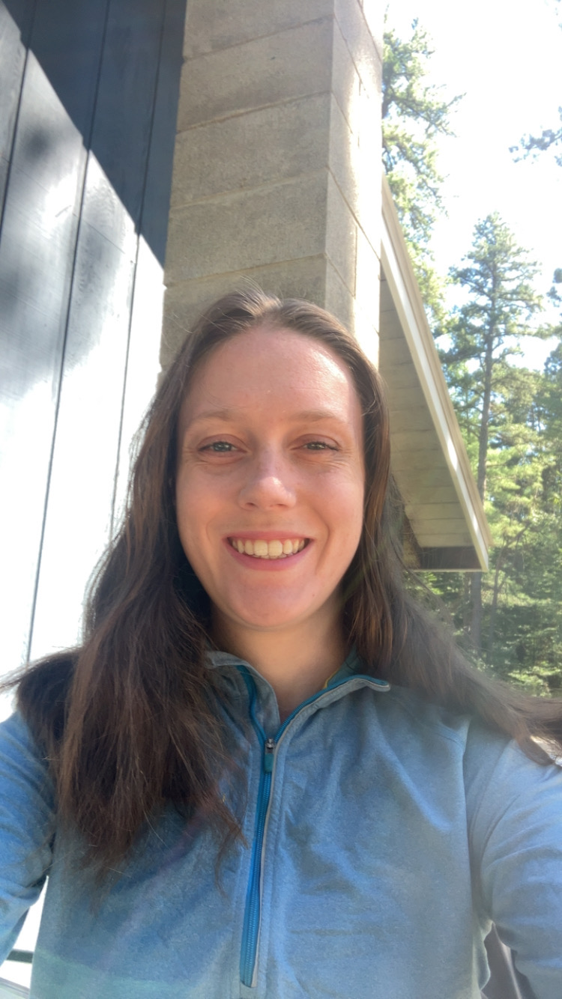

Hi, I’m Kim.
I’m a frontend developer who used to teach mathematics. I build thoughtful, user-focused interfaces with React, Next.js, TypeScript, and Tailwind CSS.

(01)About
I’m a 26-year-old frontend developer with a passion for problem-solving.
As a former teacher, my collaboration, communication, and organization skills are top notch.
As a runner, I know it takes commitment and determination to reach tough goals.
As volunteer treasurer of the White Mountain Milers, a non-profit, I’m dedicated to positively impacting my community.
Career, step by step
-
step 1Taught mathematicsLearned to explain hard things clearly and meet people where they are.
-
step 2Switched to codeSame love of problem-solving, with a faster feedback loop and a visual result.
-
nowFrontend developerReact, Next.js, TypeScript, Tailwind. Open to new opportunities.
(02)Skills
(03)Featured projects
(04)Let’s have a chat
I’m currently open to new opportunities. Tell me a little about what you’re working on and I’ll get back to you soon.